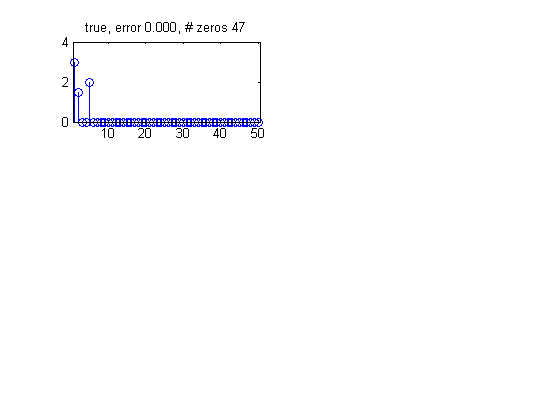
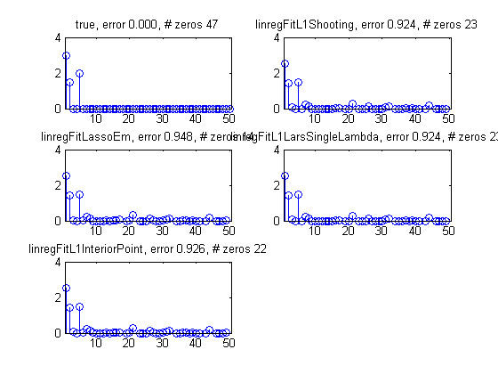

Linear Regression L1 Fit Tests
Check that different fitting methods for lasso regression give same result.
Contents
function linregFitL1Test()
Make some data
setSeed(0); N=100; %N=20; D=50; % dinensionality rho=.5; correl=zeros(D,D); for i=1:D for j=1:D correl(i,j)=rho^(abs(i-j)); end end X=randn(N,D)*chol(correl); % true weight vector has 3 non zero components w_true=[3 1.5 0 0 2 0 0 0 zeros(1,D-8)]'; sigma = 1; y=X*w_true+1*sigma*randn(N,1); figure; nr = 3; nc = 2; subplot(nr, nc, 1) doPlot(w_true, w_true, 'true')
Fit
lambda = 10;
methods = { @linregFitL1Shooting , ...
@linregFitLassoEm , ...
@linregFitL1LarsSingleLambda , ...
@linregFitL1InteriorPoint
};
for i=1:length(methods)
method = methods{i};
model{i} = linregFit(X, y, 'lambda', lambda, 'regType', 'L1', 'fitFn', method);
if i > 1
assert(approxeq(model{i}.w, model{1}.w, 1e-1))
end
subplot(nr, nc, i+1)
doPlot(model{i}.w, w_true, funcName(method))
end
iter shoots n(w) n(step) f(w)
1 50 8.3532e+000 1.9396e+000 1.3956e+002
2 100 7.9934e+000 8.6137e-001 1.3545e+002
3 150 7.7914e+000 3.7586e-001 1.3460e+002
4 200 7.7107e+000 2.1442e-001 1.3434e+002
5 250 7.6711e+000 1.3082e-001 1.3425e+002
6 300 7.6539e+000 7.6225e-002 1.3421e+002
7 350 7.6477e+000 4.3534e-002 1.3420e+002
8 400 7.6458e+000 2.5288e-002 1.3420e+002
9 450 7.6456e+000 1.5256e-002 1.3420e+002
10 500 7.6458e+000 9.1338e-003 1.3420e+002
11 550 7.6462e+000 5.2367e-003 1.3419e+002
12 600 7.6464e+000 3.0911e-003 1.3419e+002
13 650 7.6466e+000 1.9112e-003 1.3419e+002
14 700 7.6467e+000 1.1922e-003 1.3419e+002
15 750 7.6468e+000 7.4321e-004 1.3419e+002
16 800 7.6469e+000 4.8741e-004 1.3419e+002
17 850 7.6469e+000 3.1879e-004 1.3419e+002
18 900 7.6469e+000 2.1053e-004 1.3419e+002
19 950 7.6469e+000 1.3371e-004 1.3419e+002
20 1000 7.6469e+000 8.3720e-005 1.3419e+002
21 1050 7.6469e+000 5.2308e-005 1.3419e+002
22 1100 7.6469e+000 3.3851e-005 1.3419e+002
23 1150 7.6469e+000 2.1611e-005 1.3419e+002
24 1200 7.6469e+000 1.3468e-005 1.3419e+002
25 1250 7.6469e+000 8.2106e-006 1.3419e+002
Number of iterations: 25
Total Shoots: 1250
 end function doPlot(w, w_true, name) D = length(w); stem(w) err=norm(w-w_true); nz=sum(abs(w)<10^-3); title(sprintf('%s, error %5.3f, # zeros %d', name, err, nz)) xlim([.5,D+.5]); ylim([0 4]) end